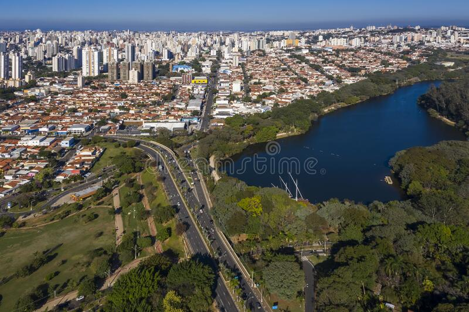

Campinas
Na atualidade, Campinas ocupa uma área de 801 km² e conta com uma população aproximada em 1 milhão de habitantes, distribuída por quatro distritos (Joaquim Egídio, Sousas, Barão Geraldo, e Nova Aparecida) e centenas de bairros. Tal vigor econômico e social, trazido em especial pela ampliação de sua população trabalhadora, tem permitido à Campinas constituir-se como um dos pólos da região metropolitana de São Paulo, formada por 19 cidades e uma população estimada em 2,33 milhões de habitantes (6,31% da população do Estado).
História da cidade de CampinasA área em que hoje se acha instalada a cidade de Campinas, conta com pouco mais de 260 anos de história colonial/imperial/republicana e com milhares de anos de história indígena. Nos marcos de sua formação colonial, a cidade de Campinas surgiu na primeira metade do século XVIII como um bairro rural da Vila de Jundiaí.
Mapa da cidade de
Demografia e Geografia da cidade de Campinas
Campinas se localiza em uma área de transição entre o Planalto Atlântico Paulista (região leste) e a Depressão Periférica (região oeste), com relevo bastante ondulado e poucas áreas planas.
Área Territorial. 794,571 km² [2021] ; População estimada. 1.223.237 pessoas [2021] ; Densidade demográfica. 1.359,60 hab/km² [2010].
Economia da cidade de Campinas
Com infraestrutura privilegiada e economia dinâmica, Campinas é detentora de um Produto Interno Bruto (PIB) de R$ 57 bilhões, o décimo maior do País, de acordo com o Instituto Brasileiro de Geografia e Estatística (IBGE). A cidade é a maior do interior do Estado de São Paulo e desempenha importante papel no escoamento da produção e distribuição de produtos e insumos na região.